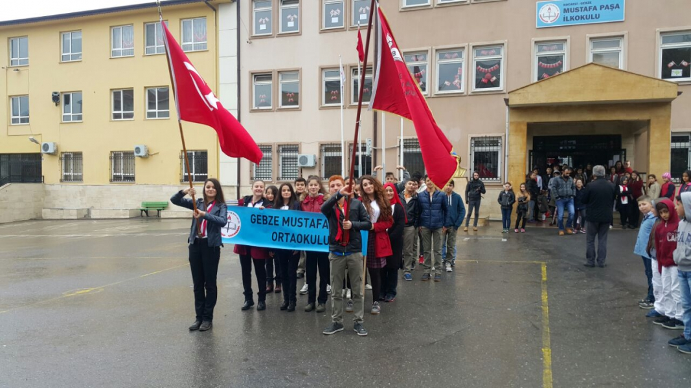
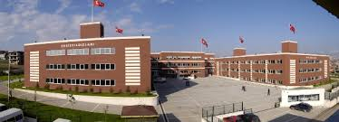
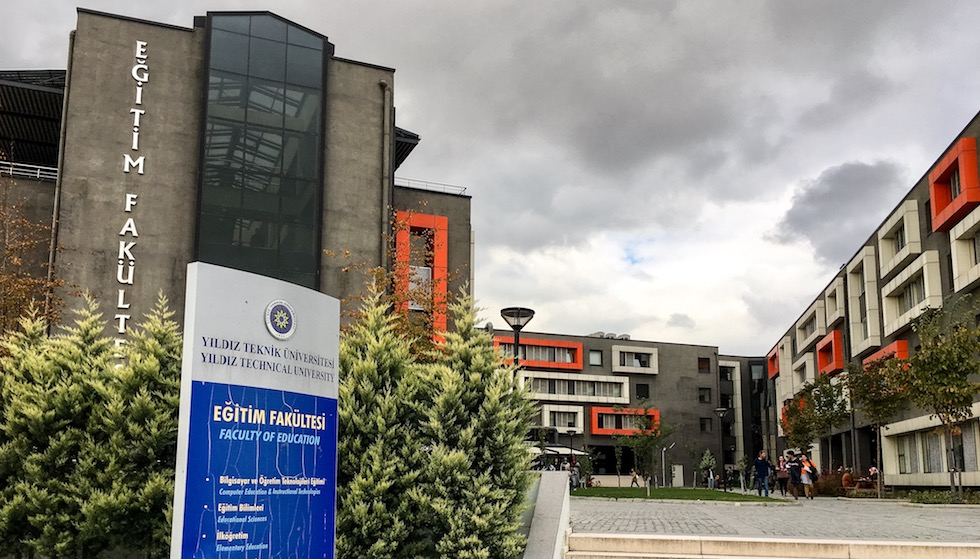

İSTİYORUZ Kİ... 1.Okulumuzda Sevgi, Saygı ve Hoşgörü herkesin ortak değeri olsun.
2.Toplumsal yaşantımızın her alanında herkes hukukun üstünlüğüne inansın 3.Okulumuzda öğrenme temel ihtiyaç kabul edilsin.
4.Öğrenenler öğrendiklerini kendisi, ailesi, milleti ve tüm insanların yararı için kullansın. 5.Okulumuzda öğrenen ve öğretenler değişime ve gelişime açık olsun.
6.Okulumuzda çalışanlar gerekenleri yaparken kendilerinden emin olsun. Doğruları yaptıklarında alacakları cevaptan korkmasın ve gerekenleri yerine getirmede endişeleri olmasın.
7.Okulumuzda her bireyin eşit olduğunu tüm veli, öğrenen ve öğretenler bilsin. 8.Okulumuzda, herkes her gün daha iyiye ulaşmak için çalışsın.

2.Lise
Ülkemizin geleceği için eğitim-öğretimde sürekli yenileşme ve gelişmeyi sağlayarak, toplumumuzun ve bölgemizin ihtiyaçlarına uygun,
Milli Eğitimin genel ve özel amaçları ışığında kaliteli mesleki ve teknik eğitim hizmeti sunup, milli ve manevi değerlere bağlı,
sanayimize ara eleman ve üst öğretime öğrenci yetiştirmek.

3.Üniversite
Topluma duyarlı: toplum refahını ön planda tutan, hayatı kolaylaştıran,
etik, insan öğesini ön plana çıkaran, ülke gelişimine katkıda bulunan, çevreye duyarlı,
kültürel değerlere önem veren, işbirlikleri kuran, topluma yüksek kalitede değer kazandıran,
Bilgi:Araştırma faaliyetlerinde öncülük eden, teknoloji geliştiren, çağdaş bilgiyi teknolojik yöntemlerle üreterek geliştiren,
İnsan: Hayat boyu öğretmeyi hedefleyen, analitik düşünen, mükemmeliyet kültürünü benimsemiş, alanında yetkin, girişimci, sorgulayan, yenilikçi,
farklı bakabilen, donanımlı, özgüvene sahip, kendi bilgi ve becerisini ifade edebilen, kendi alanında seçkin insanlar barındıran ve yetiştiren,
Uygulama: Dünya çapında sanatsal ürünler üreten, bilimsel çözümler sunan, disiplinler arası çalışmalar, inovasyonlar ve projeler yapan ve uygulayan bir üniversite olmak.
